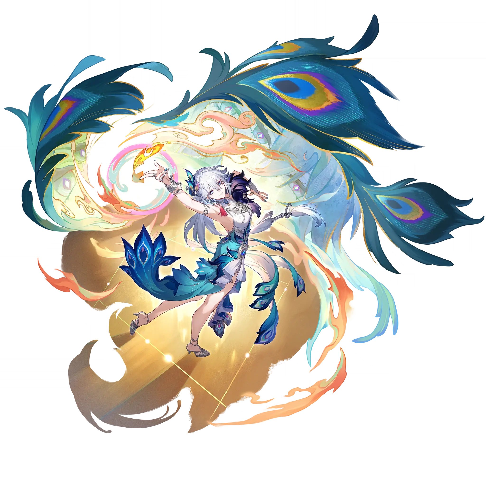

Yao Guang
Best Yao Guang build guide for Honkai Star Rail. See Yao Guang's best Relics, Light Cones, teams, Eidolons, Trace priority, and how to play Yao Guang.
🔍 Detail Skill
Semua skill aktif dan pasif beserta efeknya.
Deals Physical DMG equal to #1[i]% of Yao Guang's ATK to one designated enemy and Physical DMG equal to #2[i]% of Yao Guang's ATK to targets adjacent to it. The Energy regenerated from Basic ATK increases to 30.
Deploys a Zone for 3 turn(s). This duration decreases by 1 at the start of this unit's every turn. While the Zone is active, increases all allies' Elation by an amount equal to #1[i]% of Yao Guang's Elation. After Yao Guang uses Basic ATK or Skill, gains 3 Punchline.
When Yao Guang holds "Certified Banger": • After an ally target uses an attack, triggers the "Great Boon" effect, dealing 1 additional instance of #1[i]% Elation DMG of the corresponding Type to 1 random hit target. If this attack consumes Skill Points, then additionally triggers "Great Boon" 1 time. • When triggering the "Great Boon" effect, if the attacker's Elation is lower than that of Yao Gua
After using Technique, automatically triggers Skill 1 time at the start of the next battle without consuming any Skill Points. When Yao Guang is in the team, breaking destructible objects immediately grants Fortune Pouch, up to 8 within every Earth Week.
Inflicts "Woe's Whisper" on all enemies, lasting for 3 turn(s). Enemy targets under the "Woe's Whisper" state take 16% increased DMG. Deals #1[i]% Physical Elation DMG to all enemies. Then, deals 5 instance(s) of #2[i]% Physical Elation DMG to one random enemy.
⚔ Light Cone Terbaik
Diurutkan dari yang paling kuat. Persentase menunjukkan performa relatif terhadap pilihan terbaik.
💎 Relic Set Terbaik
Set terbaik untuk karakter ini, diurutkan berdasarkan prioritas.
📊 Stat Utama
Stat yang dicari pada tiap slot.
👥 Tim yang Direkomendasikan
Karakter yang sering dipasangkan bersama Yao Guang.
 Silver Wolf • Lv. 999
Silver Wolf • Lv. 999
 Sparxie
Sparxie
 Aventurine Waveflair
Aventurine Waveflair
 Pearl
Pearl
🔗 Lanjutkan
Build ini dirangkum dari Prydwen Institute. Starwise tidak menghitung sendiri. Angka bisa berubah setelah patch atau karakter baru rilis.